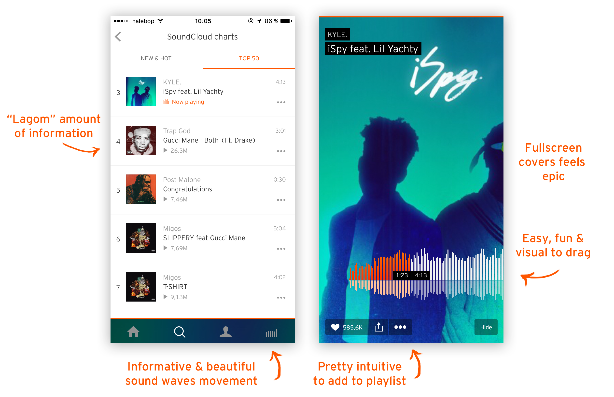
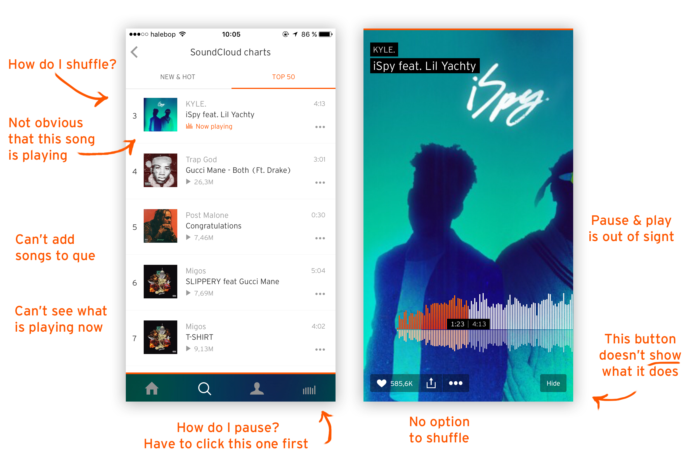
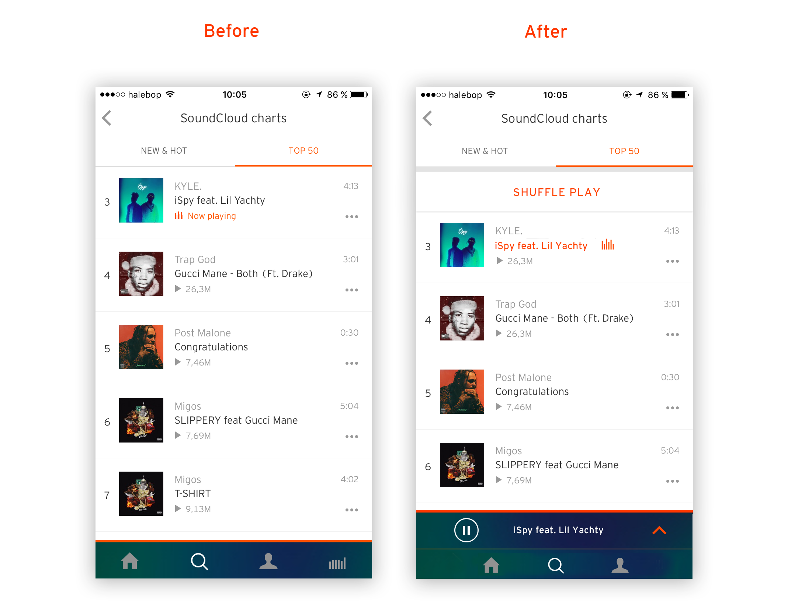
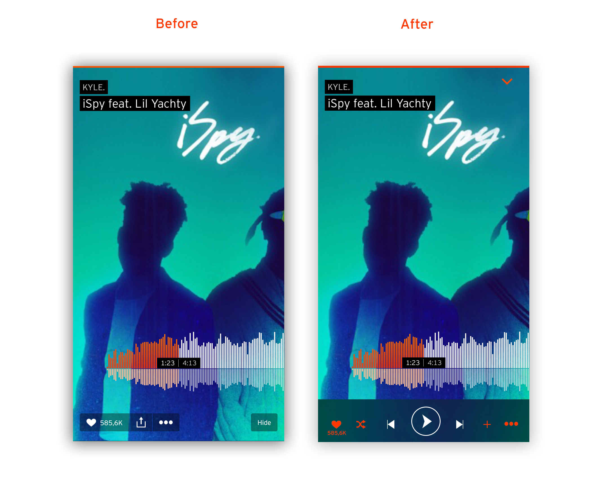

The challenge was to identify a user need, critique how well the Soundcloud iOS app currently serves that user need, and based on that re-design an experience that fulfills that user need.
I identified the user need as: “A new listener wants to browse, que, and preview songs”
I listed things that I assume enhances the experience for listeners.

- Full screen images that gives an immersive and unique feeling
- Scrolling through a track is easy and intuitive
- Adding a song to a playlist is intuitive.
In order to understand the core problem and possibilities, I explored the app and listed some things that could potentially be in the way of a smooth music exploration experience.

- You can't see what song is playing while you are browsing
- You can't pause the music while browsing, you need to click twice
- You don't have the option to que songs
- No possibility of shuffeling playlist while playing a song
- You can't preview a song or a playlist
- There is no play and pause button
- The "hide"-button feels weird.
A listener wants to be able to browse, que and explore music. Why? What metric would an improved browsing function do? My assumption is that the listener wants to easily engaged with the app and the music, while feeling completely in charge. As a new user, a non-intuitive or limited interface can result in not coming back.
When you casually browse for new music, there is a big risk that you won't find the right stuff immediately. And there is currentyl no way to tell if you are going to like a song and you can't hear it without changing songs. Maybe you want to keep listeing to the current song, while still being able to curate your future listeing by previewing songs and adding them to a que?
If it's tricky to browse and preview songs, it will interupt your flow of listening and make you tired of using the app.
And we don't want that.
I want to eliminate all unnecessary confusion and hazzle, in order for the user to feel more in control and more engaged with the app and the music.
Possible solutions:
- Clear call to action
- Conversational interface
- Only show available times
- Option to go back
- Auto populate fields for speed
- Clear confirmation

After having listed things that could possibly cause problems and my hypothesis on solutions, I started sketching on paper in order to quickly get the ideas out there.
After sketching I did a quick mockup in Photoshop which I then imported into Framer and made interactive, in order to simulate as a realistic feeling as possible.


After sketching I did a quick mockup in Photoshop which I then imported into Framer and made interactive, in order to simulate as a realistic feeling as possible.

Try out the interactive Prototype here!